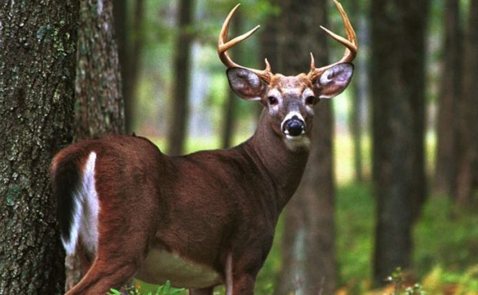
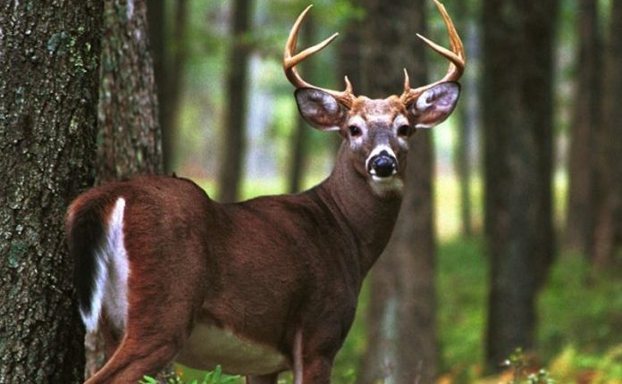
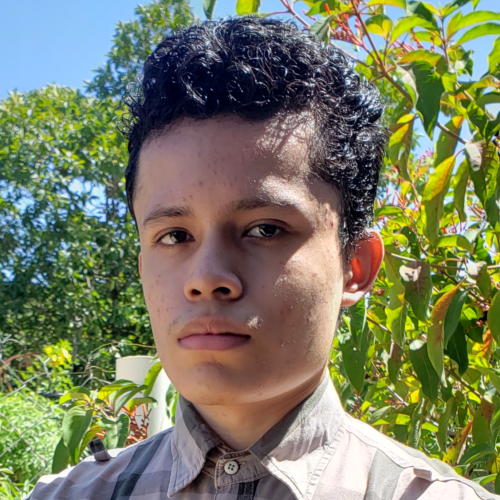

Flora y Fauna
Flora y fauna son el conjunto de seres vivos que forman parte de un ecosistema. Flora hace referencia a las especies vegetales, mientras que fauna es el término utilizado para categorizar a los animales. Si bien existe flora y fauna en casi todo el mundo, cada conjunto de especies vegetales y animales responde a características específicas de acuerdo a las condiciones geográficas y climáticas de la región en la que se desarrollan, por lo tanto, se trata de organismos que han evolucionado y se han adaptado a su entorno.
Flora
Flora son todas las especies vegetales que forman parte del ecosistema de una región determinada, bien sea porque crecen de forma espontánea en ese lugar o porque han sido cultivadas por la acción humana. El término incluye plantas con o sin flores, semillas o frutos, especies vegetales acuáticas y toda planta que contribuya a configurar la vegetación de una zona geográfica.
Fauna
Fauna es todo el conjunto de especies animales que viven en una zona geográfica determinada en el mismo período. Al igual que ocurre con la flora, en la fauna se establecen distintos tipos de relaciones (simbióticas, de competencia) que son indispensables para mantener el equilibrio en la naturaleza.
Flora y fauna de Honduras
La república de Honduras, es un país centroamericano, geográficamente ubicado dentro de los trópicos; lo que le permite que su naturaleza brinde un hábitat adecuado tanto para la flora, como para la fauna de especies especiales, variadas y en vía de extinción, lo cual ha planteado al gobierno hondureño, secretarías y organizaciones naturistas nacionales, promover y velar por la protección tanto la biodiversidad de especies, como las reservas naturales existentes.

Flora en Honduras
La flora de Honduras es muy variada, la selva lluviosa o pluvioselva, también clasificado como Bosque lluvioso tropical, es una de las más impresionantes como formación vegetal; los ecólogos la denominan "Formación Higrófila Megatérmica", por corresponder a regiones de gran humedad y constantes temperaturas altas. En los cuales hay una especie dominante única, como pinos o abetos, cubriendo grandes áreas.

Fauna en Honduras
La fauna es riquísima y variada siendo los más comunes los de vida arbórea y los que viven en las corrientes fluviales aguas lacustres. Los animales grandes no son muy numerosos pero hay cientos de especies de reptiles, anfibios y pájaros; lagartos y muchas variedades de peces en las corrientes. Monos, murciélagos y miríadas de pájaros abundan en los árboles.

Imágenes relacionadas
 

Acerca del autor de la página

Omar Meza
Hola mucho gusto, espero que haya sido de su agrado esta
información de la flora y fauna en Honduras, si ha sido así no
dudes en visitar nuestras otras páginas.
Publicamos páginas constantemente asi que no te olvides de pasar por nuestra web.
Visitar mi blog
Omar Meza
Hola mucho gusto, espero que haya sido de su agrado esta
información de la flora y fauna en Honduras, si ha sido así no
dudes en visitar nuestras otras páginas.
Publicamos páginas constantemente asi que no te olvides de pasar por nuestra web.